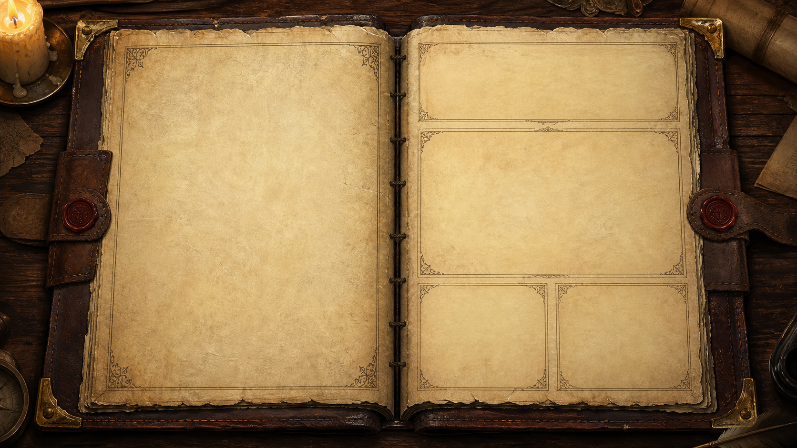

经典魔塔是主体
按格移动、钥匙门、属性晶石、药水、商店、NPC、楼层往返和固定塔图共同构成完整玩法。

一款 50 层、固定地图、固定数值、无随机战斗的经典魔塔 RPG。乐趣来自路线规划、资源取舍与可计算的成长，而不是操作检定。
按格移动、钥匙门、属性晶石、药水、商店、NPC、楼层往返和固定塔图共同构成完整玩法。
接敌前显示准确战损；进入战斗后自动交锋。没有拖动、瞄准、随机命中、暴击或隐藏信息。
玩家真正做出的动作是选择先打谁、先拿什么、何时买属性、哪把钥匙花在哪扇门上。
每层地图、怪物、道具、商店、事件和 NPC 都由统一数据描述，后续可以持续用编辑器扩写。
查看地形、门、钥匙、怪物、商店、楼梯和支路关系。
靠近怪物读取准确战损，比较不同路径的生命与钥匙成本。
选择战斗、绕行、开门、取道具、购物或返回旧楼层。
获得攻击、防御、生命、金币、钥匙和洞察，改变后续最优路线。
抵达下一层，并让之前无法通过的敌人与机关变得可解。
勇者每击 = 勇者攻击 - 怪物防御怪物反击 = max(0, 怪物攻击 - 勇者防御)回合数 = ceil(怪物生命 / 勇者每击)总战损 = (回合数 - 1) × 怪物反击勇者永远先手，最后一击击败怪物后不再承受反击。攻击不高于怪物防御时无法破防；总战损大于等于当前生命时，接敌会被阻止。
近处目标面板显示怪物 HP、预计战损和回合数。危险结果使用红色，但不弹出多余确认框。
进入双方面对面的自动战斗画面，生命条与伤害逐次变化。战斗已由数值决定，不允许撤退。
玩家可以点击“立即完成”跳过演出，但不能改变结算。完整动画保持在约一秒内。
统一扣除总战损，再给予金币和经验，记录到怪物手册并自动保存。
决定是否破防，并减少敌方反击次数。红晶、商店与武具遗物提供永久提升。
route unlock / round reduction直接降低每次反击伤害。跨过敌人攻击阈值时会产生明显的无伤收益。
damage per counter是整座塔共享的路线预算。药水恢复、升级和商店祝福扩充可承受的总成本。
global route budget由战斗获得，在商店兑换攻击、防御、最大生命或洞察。连续购买价格递增。
adaptive shop sink黄、蓝、红钥匙对应不同稀缺度的门。门后的收益必须能形成明确取舍。
spatial resource不再影响战斗动作。每点洞察降低机关的固定生命代价，用于另一条长期成长轴。
event cost -8初始属性 = 800 生命 / 18 攻击 / 10 防御每次升级 = +80 最大与当前生命 / +2 攻击 / +1 防御每段商店库存 = 3 次；单次 +4 攻击 / +4 防御 / +160 最大生命高塔圣水 = max(360, 最大生命 × 30%)非战斗事件同样遵循“先看成本，再确认结果”。玩家踩到秘匣、祭坛或古井时，会看到奖励和固定生命代价；确认后立即结算，也可以暂时离开。
机关代价 = max(0, 10 + 当前层 × 2 - 洞察 × 8)ID、名称、图像、色调、生命、攻击、防御、金币、经验、是否首领。
identity / stats / reward容易快速击杀，但防御不足时反击很痛，鼓励攻击型路线。
glass cannon攻击门槛明显；一旦破防，提升少量攻击即可大幅减少回合数。
attack checkpoint检验防御是否已跨过无伤线，常用于守住可回收资源的支路。
defense checkpoint仍使用同一公式，难度来自综合数值和前置资源规划，而非另设操作规则。
same rules / larger budget生成楼层时自动检查出生点、楼梯可达性、实体重叠和关键资源闭锁。
editor validation低压教学。直冲者可以击败首位守卫，但几乎耗尽生命。
第一次要求探索支路、拿晶石并使用商店，建立资源不能跳过的规则。
攻击与防御阈值开始分化，错误强化会明显增加反击次数。
加入返回旧层与跨层取药，让保留资源成为正式策略。
支路收益与战损接近，玩家需要比较金币、经验和永久属性。
机关、钥匙与首领共同消耗生命，单靠等级已不能覆盖错误路线。
普通怪开始持续磨血，封印守卫检验前一段的商店分配。
跨过防御线可大幅省血，配装方向比单纯堆最大生命更重要。
高压资源回收段，要求保留百分比圣水、火药和低战损支路。
最终精英段；第 50 层只保留两名近卫与王，压力集中在终战。
难度增长以五层为最小预算单元。规划路线的段内总战损与关底战损都必须逐段上升；但生命、旧层药水、商店和消耗品共同提供至少一条可通关路线。模拟是回归护栏，不代替人工路线试玩。
规划路线关底战损：56 → 240 → 420 → 475 → 780 → 1156 → 1254 → 1302 → 1584 → 2160规划路线五层总战损：139 → 470 → 551 → 667 → 1029 → 1486 → 2035 → 3341 → 5387 → 7139中央方形地图、右侧完整属性与记录、底部工具栏。键盘方向键、WASD 与点击地图均可移动。
顶部只保留楼层与系统按钮；地图优先；属性与钥匙紧随地图；操作台固定在屏幕最下方。
中央为加大的方向键，左右分别放手册、地图、火药和圣水。方向键支持按住连续移动。
游戏区域禁止文本选中、图片拖拽、长按呼出菜单、双击缩放和页面回弹；安全区适配全面屏。
点击地图时，按点击位置相对勇者的主轴方向只走一格；不自动寻路，不会因为误触连续穿越路线。
所有正式操作都是点按或方向键移动。核心流程不依赖悬停、右键、精细拖动或多指手势。
手机战斗采用左右双角色卡与底部固定结算区，玩家生命、敌人生命、回合和战损始终可见。
移动、开门、拾取、恢复、阻挡、升级与战斗演出使用统一奇幻音效；右上角提供持久化静音开关。
扩充内容时优先组合已有规则。新内容应该改变地图关系、数值阈值、资源回报和叙事语境，而不是为每个敌人写独立战斗脚本。
移动目标、攻击范围拖拽、承诺线、目标隐藏、命中区域、练习模式、专注值和以观察力减速目标。
所有战斗回到经典魔塔固定公式；冒险机关改为显示固定生命代价后的确认事件。
50 层固定探索、商店、怪物、NPC、物品、钥匙门、回层传送、本地存档与可持续扩写的数据框架。
自动曲线已经建立；下一步优先人工验证每段的地图路线是否真的产生预期取舍，再扩写敌人、事件与叙事。